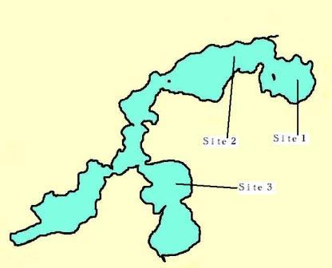

Wisconsin lakes are under stress from pollution, loss of habitat and more recently aquatic invasive species (AIS). The state has too few resources to monitor all 15,000 lakes and for decades has depended on citizen volunteers for help. At UW Lakes Extension, the Citizen Volunteer Monitoring Network (CLMN) is working with Clean Boats Clean Waters (CBCW), Wisconsin DNR, Wisconsin Association of Lakes (WAL), county and regional Extension and others in a statewide partnership to prevent the spread of and monitor for AIS. UWEX Lakes has evolved CLMN training sessions to include AIS monitoring protocols and has taken the lead in training staff (UWEX, County Extension, Basin Educators, RC&D, DNR, etc.) to train volunteers as well as host monitoring workshops. Now, most AIS “new finds” are discovered by trained volunteers and lakes residents allowing earlier detection and rapid response.
CLMN monitors secchi clarity, chemistry, temperature, dissolved oxygen, aquatic plants and AIS (Fig. 3). The goal is to expand the less expensive monitoring while maintaining and slightly expanding the more costly chemistry, temperature, dissolved oxygen and plant monitoring opportunities.
Water quality on Little St. Germain Lake is monitored through participation in this program. Three sites are monitored regularly. The collected data is uploaded to a WDNR website from which reports are available. The three sites are depicted on the map below and links to specific reports are provided in the table following the map:

| Upper East | Water clarity | Water quality 2007 - 2006 - 2005 - 2004 - 2003 - 2002 - 2001 | Trophic state |
| East | Water clarity | Water quality 2007 - 2006 - 2005 - 2004 - 2003 - 2002 - 2001 | Trophic state |
| South | Water clarity | Water quality 2007 - 2006 - 2005 - 2004 - 2003 - 2002 - 2001 | Trophic state |
| West | Water clarity | Water quality 2007 - 2006 - 2005 - 2004 - 2003 - 2002 - 2001 | Trophic state |